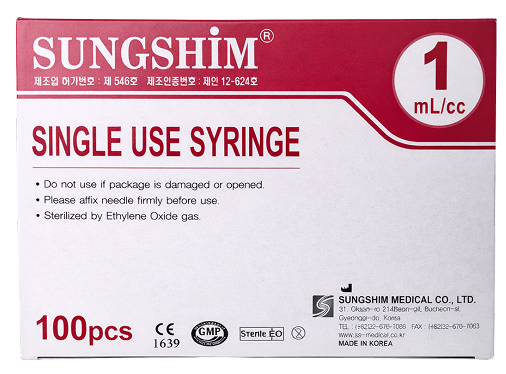

SINGLE-USE SYRINGE
Single-use syringes are disposable sterile medical devices designed for general injection and fluid administration. Intended for one-time use, they help maintain hygiene and reduce the risk of contamination in clinical environments.
Engineered for consistent performance, these syringes support safe and controlled medical procedures.
- Manufactured in compliance with international quality standards
- Designed with advanced engineering for optimal performance
- Ensures smooth and comfortable needle penetration
- Low dead space design helps minimize medication waste
- Offered in a range of sizes to suit different needs
- Sterilized using EO gas for safety and hygiene
- Proudly manufactured in Korea
| Capacity | Needle Size | Box Quantity | Carton Quantity |
|---|---|---|---|
| 1 mL/cc (Luer Slip) | 23G x 25 mm (1") | 100 pcs | 3,600 pcs |
| 26G x 13 mm (1/2") | |||
| 27G x 13 mm (1/2") | |||
| 27G x 25 mm (1") | |||
| 30G x 13 mm (1/2") | |||
| Seasoned (w/o) | |||
| 2 mL/cc (Luer Slip, Luer Lock) | 23G x 25 mm (1") | 100 pcs | 3,600 pcs |
| 3 mL/cc (Luer Slip, Luer Lock) | 23G x 25 mm (1") | 100 pcs | 3,600 pcs |
| 24G x 19 mm (3/4") | |||
| Seasoned (w/o) | |||
| 5 mL/cc (Luer Slip, Luer Lock) | 23G x 25 mm (1") | 100 pcs | 3,600 pcs |
| 22G x 32 mm (1 1/4") | |||
| 21G x 32 mm (1 1/4") | |||
| Seasoned (w/o) | |||
| 10 mL/cc (Luer Slip, Luer Lock) | 23G x 25 mm (1") | 100 pcs | 3,600 pcs |
| 22G x 32 mm (1 1/4") | |||
| 21G x 32 mm (1 1/4") | |||
| Seasoned (w/o) |
-
Preparation
- Inspect the packaging for any damage, missing parts, or expired products before use.
- Ensure the user fully understands the purpose, instructions, and safety precautions prior to use.
-
Usage Procedure
- Wash hands thoroughly before handling the syringe and open the packaging.
- Remove the protective cap and carefully pull off the needle cap without damaging the needle.
- Clean the injection site using an alcohol swab and allow it to dry completely.
- Draw or prepare the required medication dose as directed by the healthcare professional.
- Remove any air bubbles by gently tapping the syringe and adjusting the plunger.
- Pinch the skin lightly when required and administer the injection.
- After injection, remove the needle and gently press the site with a swab; do not rub.
- This product is intended for single use only, do not reuse.
- Dispose of used syringes in a sealed, puncture-resistant container and follow proper disposal regulations.
Warnings
- Using the wrong syringe size or applying the product incorrectly may lead to dosing errors or injury.
- Users must fully understand proper usage and precautions before use.
Precautions
- Use only for its intended purpose.
- Do not use if packaging is damaged or contaminated.
- Do not use if the needle is bent or damaged.
- Open immediately before use; do not pre-fill for extended storage.
- Injection discomfort may increase if:
- The needle coating is damaged, for example after wiping with alcohol.
- The needle direction is altered during insertion or withdrawal.
- Air bubbles are not removed prior to injection.
- This is a single-use sterile product; reuse is strictly prohibited.
This product is designed for single-use medication administration and general clinical injection procedures.
- Shelf Life: 3 years from the date of manufacture
- Packaging: Individual sterile packaging by size variant
- Storage Conditions: Store at room temperature; avoid exposure to direct sunlight, heat, and humidity
Note: This is a medical device. Please read all instructions and safety guidelines carefully before use.